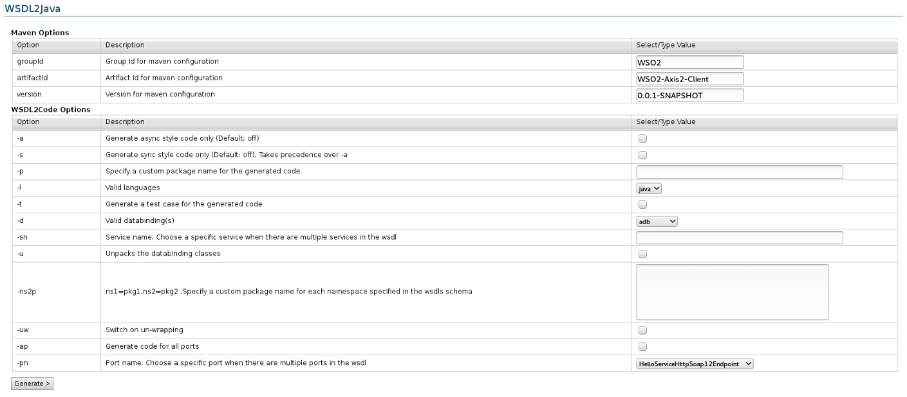

Deploying Service Archives
The WSO2 SOA platform has the capability of Axis2 to deploy a service as
an archive file. You can bundle all your service-related resources, service
classes, and third-party libraries and then deploy the archive file.
To deploy the service, all you have to do is locate
the archive file and upload it.
Uploading Service Archive Files
To upload your service archive file, you first need to have all the class
files and the service.xml files in the archive directory. Thereafter, you can
create the archive file.
The folder structure of the service archive file will be as follows.
Test.aar
META-INF
Services.xml
Test.class

Figure 1: Uploading service archive files
- In the navigator, under Manage/Services, click AAR
Service. The Add Service Archives
window appears.
- Provide the hierarchical path of the service. This is optional. If you want to manage
services separately, specifying a heirarchy is important. This allows you to customise
your service EPR as you wish. And also it allows you to manage multiple versions of the
same service changing only the business logic.
Example: Consider a service "Version"
If no service hierarchy -> EPR is ../services/Version
With service hierarchy foo/bar/1.0.0 -> EPR is ../services/foo/bar/1.0.0/Version
- Click Browse to locate the file you want to
upload.
- Click Upload.
The Deployed Services page
appears. Subsequently, if the service is successful, it will appear in
the Service Groups table. If the service is faulty, a Faulty Service
Groups link will appear. You can click the link to view the errors.
Testing the Service
A successful service can be easily tested through the user
interface.Several options are available to control your service.

Figure 2: Service dashboard
- In the navigator, under Manage/Services, click List.
The Deployed Services page appears.
- Click on the service name you want to test. The Service
Dashboard page appears.
- Click Try the service on the Client Operations
panel.
- A page with your service name appears. It contains the operations
available for your service.
- Give the parameters for the operations you want to invoke.
- Click Send button at the bottom of the window.

Figure 3: Try the Service
Note: Instead of using this user interface, you can also manually place
the .aar containing all the required files
into CARBON_HOME/repository/services. These archive files can be deployed
as services.
Generating the Client
You can generate the client for your service using the WSDL2Java tool in WSO2 Application Server (WSO2 AS).

Figure 4: Generating the client
- In the navigator, under Manage/Services, click List.
The Deployed Services page will appear.
- Click on the service name for which you want to generate the client.The
Service Dashboard page appears.
- Click Generate Axis2 Client. The
WSDL2Java page appears.
- Enter or select the appropriate values in the
WSDL2Java page.
- Click Generate.